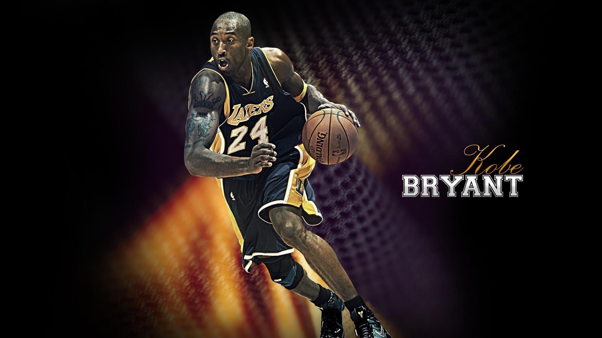

Biografía de Kobe Bryant
- Fecha de nacimiento: 23 de agosto de 1978
- Lugar de nacimiento: Filadelfia, Pensilvania, EE. UU.
- Altura y peso: 1.98 metros, 96 kg
- Posición: Escolta
- Equipo histórico: Los Angeles Lakers (1996–2016)

Trayectoria Deportiva
Inicios y High School
Kobe fue una estrella desde la escuela secundaria en Lower Merion High School. Se declaró elegible para el Draft de la NBA directamente desde la preparatoria.
- Ganó el campeonato estatal en Pensilvania.
- Fue seleccionado en el Draft de 1996 por los Charlotte Hornets y traspasado a los Lakers.
Carrera Profesional
Jugó 20 temporadas en los Lakers, donde se convirtió en una leyenda:
- 5 veces campeón de la NBA.
- 18 veces All-Star.
- 2 veces MVP de las Finales.
- 81 puntos en un solo partido (2006).
Vida Personal y Legado
- Hablaba italiano con fluidez por haber vivido en Italia durante su infancia.
- Ganador de un Óscar por su corto animado "Dear Basketball".
- Falleció trágicamente el 26 de enero de 2020, dejando un legado eterno.